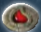
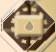
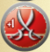
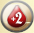
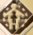
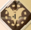
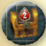

Setup
Before you start, choose if you want to play the Rookie Mode or the Elder Mode. The option you choose will modify the setup, the way you collect Mission tiles, and the risk of being burned to ashes at the end of the game.
Game Board & Hunt Track-
Place the game board (Rookie: Side A; Elder: Side B) in the middle of the table and the Hunt Track to the right. Assemble the Hunt Track based on the number of players: You must have 1 more row than the number of players (ex: 4 rows in a 3-player game).
-
Shuffle the Bonus tokens face down and place 1 face down on every Chest space. Keep the rest of the tokens near the board to create a Reserve. Flip the tokens that are on the open Chests.
-
Place the Damage tokens near the board.
-
Place the 4 Rose cards (including the Rose Sword) face up on the Labyrinth.
-
Draw 3 cards from the Hunt deck (from bottom on Rookie mode) and place them face down on the Tavern without looking at them.
-
Place the Moon token on the first space of the Turn Track.
-
Prepare an Event deck:
Take the '15th Turn' card. Shuffle all the Turn cards and draw 13 that you place face down on top of the 15th Turn card to create an Event deck. Put the rest of the Turn cards back into the box. Shuffle the Game Event cards and draw one that you place face up on top of the deck. This event will last for the entire game. Put the rest of the Game Event cards back into the box. -
Prepare the Threat deck: Shuffle all Vampire Hunters and Werewolves together and put them face down in a pile near the Hunt deck.
-
Take one Spawn location of each color (discard the green in a 2-player game) and randomly add Spawn locations until you have one per row (total of 5 in a 4-player game): Place them under the Hunt track face-up. When you know the game, you can increase the difficulty by adding more Red locations or reduce it by removing one color (green).
-
Each player chooses a Vampire and takes their sheet, starting deck, Vampire token and Score token, which they place on the "0" space of the Score Track.
-
When you play with the High Stakes expansion, each player takes the six card Starting decks from it instead of the main game. These cards are: Vampire Thorns, Vampire Thirst, The Hunger, Vampire Rush, Vampire Claw, Gloom Stalker.
-
Each player takes 8 Wound cards of their color and places them on a 'You are Injured!' card to create a pile face up near their Vampire sheet.
- Shuffle the new Hunt cards with the original Hunt cards (without the Roses) to create a Hunt deck that you place near the Hunt Track.
ROOKIE MODE: This option allows beginners to start with more Vampire Powers and Familiars for the first two turns. Gather the Human, Familiar and Power cards marked 'A'. Shuffle them and take 2 + 2 per player, setting them aside without looking at them. Shuffle the rest of the cards back into the deck, and put the cards that were set aside on top of the deck.
If you are playing a 2- to 4-player game, put the Missions marked "5+" back into the box.
-
Mix the Missions with the beige background and place 2 chosen at random on the Public Mission spaces face up (In Rookie mode, take them from the ones with a white title). Then shuffle all of the remaining Missions together.
-
Each player draws 2 Missions, chooses 1 and discards the other back into the box without showing it.
-
Place the corresponding number of Missions on each Crypt space: Mountains (6), Plains (5), and Forest (4). Put the remaining Missions in a Reserve near the board without looking at them.
Important: When you play with this expansion, please note that some Missions may be worth more than 10 Victory Points at the end of the game if you don’t pay attention to your opponent’s play.
First Turn Preparation-
Place Castle tokens on the Castle depending on the number of players:
* 2-players > 10/6
* 3-players > 10/6/4
* 4-players > 10/8/6/4
* 5/6-players > 10/8/6/4/2 -
Each player shuffles their deck and draws 3 cards.
-
The first turn's playing order depends on the Vampires' Speeds: Each player adds up the Speeds on their cards. Vampires with the lowest Speed will play first and the fastest will play last. In case of a tie between Vampires, the oldest player will play first. Place your Vampire tokens on the Castle in turn order, with the slowest Vampire on top.
-
Prepare the Hunt Track: Draw 2 Hunt cards for each row and place them face up in column 2 and 3.
Goal of the Game
You have exactly 15 turns to hunt your prey, collect as many Victory Points as possible, and come back to the Castle.
Rookie vs. Elder ModeROOKIE MODE: You must come back to the Castle or at least be in the Cemetery or the Mountains to score your Victory Points.
ELDER MODE: This is the regular game and all rules refer to this mode. When you play the Elder Mode you must come back to the Castle or at least the Cemetery to score your Victory Points.
If you play with the High Stakes expansion, new concepts such as Threats, Events, and Attack values are introduced. This expansion is not recommended for your first game.
Note: At the beginning of the game, if you want to play in Elder mode with younger or beginner players, you can decide they are safe in the Mountains.
Components & Card Anatomy
- Starting card (S)
- Speed
- Name
- Starting card's owner
- Vampire Thirst or 3 if you have at least 1 Human in your playing area.
- Type of card
- Effect
Starting cards have a golden background to help identify them.
Hunt Card Anatomy- Rookie (A) mode
- Speed
- Victory Points that you earn as soon as you hunt this card or this Rose
- Category
- Name
- Type of card
- Dee: Draw 1 card. (Hunting effect)
- Playing area effect
- End of the Game effect
- Effect
- Murdoch: Gain if you hunt Murdoch in the Forest. (Hunting effect - Dark frame)
- Attack value icon
- Keywords (such as BFF, Champion, Sneaky, Healer, Rage, Stash)
- Name
- Werewolf Attack: All Vampires in the Forest add 2 Wounds to their discard and draw 1 card. (Effect)
- Threat Spawn color
- Moon icon
- Attack Value (Number of Wound cards you add when they attack you)
- Victory Points that you earn as soon as you defeat the Threat
- Bonus you gain when you defeat the Vampire Hunter
- Nina: Eat all Humans on column 1. Defense, Permanent. When you defeat Nina, gain 1 Victory Point for each Human she has eaten.
- Enigma Marsh: Defense, Permanent. When you defeat Enigma Marsh: Take 2 Missions from the Reserve, keep 1 and Exile the other.
- Life (Number of Damage tokens you need to defeat the Threat)
- Effect
- Type of Threat: Werewolf
- Type of Threat: Vampire Hunter
- Human Villager
- Human Religious
- Human Military
- Human Noble
- Starting Power
- Power
- Familiar
- Item
- Threat (Werewolves and Vampire Hunters)
- Event
HUMANS are your main objectives. There are ones for every taste and Vampires love them. But some may leave you with a bad taste in your mouth, or have unexpected effects on hungry Vampires. You will need to hunt with subtlety, collecting the ones who give you the most points or who match your Missions.
Vampires often have FAMILIARS to help them in their hunt. Once you get them they will stay in your playing area and give your their benefit each turn.
You may gain new POWERS, to transform into a bat, to blend into darkness, or gain Speed and strength. Powers are great to optimize your deck, but don’t lose sight of your objectives.
Vampires are undying romantics, and are enamored by the short-lived beauty of ROSES. You can run for the Labyrinth to pick one of the Roses and gain its benefit every turn.
THREATS like Werewolves and Vampire Hunters stalk the night, eager to disrupt your hunts and drain your resources. You must use your Attack to defeat them before they defeat you.
The Carpathian Mountain nights differ frighteningly. EVENTS allow players to adapt to game-changing rules, unexpected incidents, and the spawning of new Threats throughout the game.
Turn Structure
In The Hunger, players take turns one after the other. Each player must resolve the effects of all cards in their playing area before play passes to the next player.
A. Determine Turn OrderThe turn order depends on the position of the players on the board.
For the first turn, the order is determined by the Vampires' Speeds (see Setup). Stack the Vampire tokens on the Castle with the first player on top and the last one on the bottom.
Starting on turn 2, draw and reveal 1 Event card at the beginning of the turn before play begins. Follow its effect until the end of the turn. Most Event cards will make you add a Threat. The card for the 15th Turn is always the same. You don’t draw a card for the extra turn if any Vampire has an umbrella.
In later turns, it's always the Vampire on their active side furthest from the Castle who plays first.
When you finish your turn, flip your Vampire token face down (to the "resting" side) to avoid any confusion.
Turn Order Priority Per RegionIf the Vampires are not in the same region:
- Vampires in the Forest play first,
- then Vampires on the Plains
- then Vampires in the Mountains,
- and finally Vampires in the Cemetery.
If several Vampires are in the same region, they take turns depending on the path they are on:
- Vampires on the Road play first,
- Then Vampires on the Railroad,
- and finally Vampires on the Boat path.
If several Vampires are in the same region and on the same path, the Vampires closest to the Labyrinth play first.
A Vampire whose token is on top of another Vampire plays first.
B. Player Turns (Open Season)The first player completes all their actions, then the next player plays, until everybody has had a turn.
On your turn, you must play all of the cards in your hand to your playing area, and then resolve all of them, one at a time, in any order you choose. You can use an effect to discard a card before you resolve it, if you don't want to use that card's effect.
You never have to spend all your Speed, but you can't move after you have triggered a board effect or after you have started to hunt. Any unspent Speed is lost at the end of your turn.
Beware! If the Moon token is on the '15' space you are playing your last turn.
Your turn is divided into 3 steps:
1. Activate Discard/Draw EffectsDiscard effect
Draw effect
You must always activate your discard and draw effects before doing anything else.
You can activate them in any order to optimize your play. You must complete all of each card effect before activating the next one.
You can discard only cards you have not activated. If you discard a card before you activate its effect, that effect is ignored. Also, do not add or subtract its Speed.
Note: If you need to draw a card but your deck is empty, shuffle your discard pile to create a new deck.
2. Calculate Speed and AttackAdd the Speed on all of the cards in your playing area (including the Speed on your Permanent cards).
The total is your Speed for this turn, which you will be able to use to Move and Hunt.
When you have Attack on one or more cards from your playing area, you add them together to calculate your Attack Value at the same time you calculate your Speed.
You can use your Attack Value after you move in 3 different ways:
- Defeat one or more Threats: You can spend as much of your Attack Value as you want to wound any Threat in your playing area. This is optional. You may keep some or all of your Attack Value to Hunt.
- Improve your Hunts: You can add none, part, or all your remaining Attack Value to your Speed to improve your Hunt. This doesn’t give you an extra Hunt and you don’t need to have Speed to use it that way.
- Attack another Vampire: If you finish your move on other Vampires, you can Attack them by spending at least 1 Attack. You can only attack one Vampire at a time. If you land on several Vampires, you choose which one to attack. (See Attacking Other Vampires).
Flip your Vampire token to its resting side.
Discard all cards other than Permanent cards from your playing area.
Activate any End of Turn effects.
Draw 3 cards. If your deck is empty, shuffle your discard pile to create a new deck, then finish drawing cards.
Now it’s time for the next player to play. If you are the last player, proceed to C - Prepare for the Next Turn.
Draw Hunt cards (unless you are on turn 15), 1 for each space in column 3 of the Hunt Track. You don’t draw new Hunt cards on turn 15.
Add 1 card to the Tavern, face down, if there are no Vampires and less than 3 cards there.
C. Prepare for the Next TurnAfter all players have played their turns, carry out the following tasks:
Move the Moon one space to the right. If you are already on the last space (15), the game is over. Vampires with a Parasol can play another turn without hunting.
Flip all Vampire tokens to their active side (face up).
Move all remaining cards on the Hunt Track 1 column to the right. Cards in column 1 don’t move and are stacked together to create a pile of cards. You can always check a pile of cards before hunting them.
Movement & Board Effects
You are never forced to move unless a card’s effect states otherwise.
If your total Speed is 0 or negative, you can’t move. You don’t trigger or benefit from the space you stay on.
If your total Speed is positive, you can use all or part of it to move your Vampire in one direction. You can change paths when you pass an intersection but you can’t move forward and come back on the same path.
If you move, trigger the board effect only on the space where you finish your movement.
Board Spaces & EffectsCASTLE: You can’t hunt in the Castle. Each Vampire who comes back to the Castle takes the highest remaining Victory Point tile and immediately scores that many points. You can’t leave the Castle after you come back. You can’t push a Vampire out of the Castle. You can't use your Attack in the Castle. There is a Well in the Castle (for Spicy or Mist effect).
CEMETERY: You can’t hunt Humans in the Cemetery. You can use your Attack in the Cemetery.
CHEST: Take the Bonus token if any are left (see Bonus Tokens for their effects). Add it to your player sheet face up and immediately score. There is no limit to the number of Bonus tokens you can have.
CRYPT: Gain a Mission (see Missions).
LABYRINTH: Hunt 1 Rose of your choice at no cost. This counts as a hunt, which means you may not also hunt on the Hunt track this turn.
MARKET, CHURCH, MANSION, BARRACKS: You can digest a Human card of the corresponding Human type from your discard pile or your playing area (it can be a Human you hunted this turn).
SHIP: You can’t hunt on a ship.
TAVERN: You can hunt all the cards in the Tavern for 2 instead of hunting on the Hunt track (don’t look at the cards until someone hunts them). If you hunt them you must take all of the cards.
WELL: You have an extra hunt this turn, but it can only be used on the 1 Column of the Hunt Track.
MISSIONS: Take all available Missions from the space into your hand then replace all but one. You can replace one or more, even all, of your previously unused Missions this way and take that many new Missions from the stack. You can’t discuss or mention the content of the remaining Missions.
MissionsRoyal: Gain 1 for each you have hunted.
Vampires of the Coast: Discard if you hunt a Human in the Plains to hunt 1 card in the same column for free.
Missions (beige background) are kept face down until the end of the game.
Instant Missions (gold background) are revealed during the game on your turn. They can't be Public Missions. If used, you can't return them when you take a new Mission.
Rookie Mode: Look at the available Missions and pick 1. Put the rest back on the board. You may only return the Missions that you were just looking at, never ones that you had previously.
Hunting & Attacking
If you have any Speed left after moving you may now hunt one time, taking 1 card or pile of cards from the Hunt Track.
To hunt, choose 1 card or pile of cards on one space of the Hunt Track. You must be able to spend the required Speed indicated on the Hunt Track. Hunting costs you 1, 2, or 3. Hunting a Rose is free.
You must take all of the cards from the space you have chosen and place them in your discard pile.
Hunting from a row defended by a Threat triggers that Threat's attack.
All unspent Speed is lost. You can’t move after you have hunted.
Humans & ScoringEach Human is worth a number of Victory Points that you score as soon as you hunt them plus a bonus depending on the region you hunted them in. Gain:
- +1 for every Human you hunt on the Plains.
- +2 for every Human you hunt in the Forest.
If you land on a space occupied by 1 or more Vampires, you may Attack another Vampire by spending at least 1 Attack. You can only attack one Vampire at a time. If you land on several Vampires, you choose which one to attack.
If you do, you can push the Vampire 1 space in any direction. They discard as many cards from their deck as the Attack Value you spend on the Attack. You gain 2 Victory Points for every Human discarded this way.
Note: You can’t Attack a Vampire who is in the Cemetery or the Castle.
Threats
Werewolves and Vampire Hunters are attracted to the Vampires. Threats can only be added by Event cards. When you draw an Event card, refer to the Threat Spawn color at its bottom.
If it's a moon icon, it's a safe night, no Threat this turn.
If a Spawn location card of the same color is available under the Hunt track, add 1 Threat. If all Spawn locations of that color are already occupied by Threats, you don't add any this turn.
If a Spawn location is available, the player with the fewest Victory Points draws the first card from the Threat deck. (If a tie exists, the last player in turn order draws.) Next, place the Spawn Location on the right of the row from the Hunt track of their choice. Add the Threat card on top of it.
Adding a Werewolf: When you place a Werewolf, they eat all Humans on column 1 of their row, if any. Add them under the Werewolf card. These Humans will no longer affect the game except for Mission scoring or End of Game bonuses (like Roxane).
During Upkeep if any Humans arrive on column 1 of their row, they eat them. Familiars and Power cards are not affected by Werewolves.
Threat AttacksYou don't choose to attack Threats while they are defending the Hunt track. All Threats have Defense, which means they will attack you if you Hunt a card from their row. If you do, place the Threat card in your playing area and put the Spawn location back under the Hunt track. This Spawn location is now available.
Threats don't stop you from hunting, but they attack you when you do. They attack even if it is an extra Hunt you get due to a well, a Mission, a card, or bonus effect. In the case of several Hunts you can get several Threats in the same turn if several of the rows you are hunting are defended by Threats.
Threats are Permanent, which means they stay in your playing area until you defeat them. You can't discard them by any effect.
This is the only way to get a Threat from the Hunt track. You can have several Threats in your playing area, but it is probably not a good strategy.
WHEN YOU ADD A THREAT IN YOUR PLAYING AREA:
When you hunt a row defended by a Threat, they attack you immediately. Add them to your playing area and add a number of Wounds from your Wound pile to your Discard equal to their Attack Value.
EVERY TIME YOU NEED TO SHUFFLE YOUR DECK:
When you shuffle your deck because it's empty or due to an effect, any Threats in your playing area add a number of Wounds from your Wound pile to your Discard equal to their Attack Value before you shuffle it.
If you ever need to add a Wound and your Wound pile is empty, lose Victory Points for each Wound you can’t add.
Defeating ThreatsOn your turn, after moving but before hunting, you can spend any Attack you have to deal damage to any Threat in front of you. Decide how much Attack you want to spend on one or several Threats and add 1 Damage token for each Attack Value you spend on the targeted Threats. You cannot attack a Threat in the same turn they arrive in your playing area.
If you defeat a Threat, immediately gain their Victory Points and place them in your Digest pile. You don’t gain the Victory Point Bonus from Plains or Forest.
If you defeat a Vampire Hunter, take any bonus they give, as described on the card text. Depending upon the Vampire Hunter, the bonus could be a Bonus token or a new Mission.
Note: You don’t gain the 2 Victory Points from the Bonus token. They are included on their Victory Points.
If you defeat a Werewolf, also digest all the Humans they have eaten beneath them. Hunting effects from eaten Humans don’t trigger when you defeat the Werewolf and you don’t gain their Victory Points. They still count as a Human of their faction in regards to some Missions or End of the game Victory Points.
Missions & Bonus Tokens
Missions (beige background) are kept face down until the end of the game.
Instant Missions (gold background) are revealed during the game on your turn. They can't be Public Missions. If used, you can't return them when you take a new Mission.
Bonus TokensEach token gives you 2 when you pick it up. You can play them on your turn. When you do, flip them to their Chest side to remember that you have used them.
Church, Military, Villager, Noble: Each of these tokens counts as 1 Human of the corresponding type as if you had hunted them for Missions and majorities.
Human Type choice: This token counts as 1 extra Human of the type of your choice (choose at the end of the game). It can be used to score multiple Missions but you can't change the type after choosing.
1 or 2: You can spend this token to add 1 or 2 to your Speed for the turn.
Attack: Use to add 1 or 2 to your Attack Value.
+1 Hunt: You can hunt 1 extra time this turn.
Discard 1 card then draw 1 card.
Draw 1 card and add it to your playing area.
Healing potion: Use to heal all Wounds in your playing area.
Gain 1 Mission: Choose from a stack of Missions as if you were on its space.
Parasol: You can play 1 turn after the last turn but without hunting. You can play only 1 extra turn, even if you have several Parasols.
Velvet Clothing: Immediately gain an extra 2 when you pick up this token for a total of 4.
End of the Game & Final Scoring
Dawn triggers the end of the game. Any Vampire with a Parasol can play a final turn without hunting.
At the end of the game, add your Missions and End of the game Victory Points as usual.
Be careful, with Werewolves eating Humans, and Vampire Hunters giving Bonuses, some Missions can be worth more than 10. Be aware of your opponent’s actions and avoid their surprise tactics.
Humans digested at the same time you defeat a Werewolf count for any Missions or End of the game Victory Points.
If you have undefeated Threats at the End of the game or when you enter the Castle, they attack you one last time, then Exile them.
Each Wound you still have in your Deck, Hand, Discard or Digest makes you lose 2 Victory Points.
Safe Zones & AshesDepending on the difficulty level you chose at the beginning of the game, check to see who made it:
Plains or Forest: Vampires here are burned to ashes by the sun. They can count their Victory Points but just for the glory of it.
Mountains (only in Rookie Mode): Vampires here are burned by the sun but manage to take cover and come back to the Castle. They lose the number of Victory Points indicated by the space they are on.
Mountains (Elder Mode): Vampires here are burned to ashes by the sun.
Cemetery: Vampires here take cover in the nearest vault. They each lose 5.
Castle: Vampires here are safe.
Final Scoring & Winner Card BonusesAdd Victory Points from cards with an End of the Game effect.
Hunters give you as many as you have Humans of the same type (including themselves).
The Wolf Echo gives you as many as you have Wolves (including himself).
Cyrana: Gain 1 at the end of the game if you have Roxane.
Veres: Gain 1 at the end of the game for each you have hunted.
Echo: Ready. Permanent. Gain 1 at the end of the game for each Wolf you have.
Each player gains the points shown on the Public Missions if they met their requirements.
Each player reveals their own Missions and scores them.
Note: Majority Missions require you to have more than each of the other Vampires, not equal to any of them.
If you reach 100 Victory Points, flip your Score token to the 100 side and start over from 0.
WinnerThe Vampire with the most Victory Points wins the game.
In case of a tie, the tied Vampire who got to the Castle first or is the closest to the Castle (if none of them got there) wins the game.
Glossary & Card Effects
Discard 1 card: Take another card from your playing area and place it in your discard pile. You can use this effect to discard a card before activating it if you want to avoid that card's effects. You can discard a Permanent card. Some cards ask you to discard them to trigger their effect.
Familiar: Familiars stay in your playing area when played as they are Permanent.
Rose: Roses are Items. You don't have to race for a rose but they really give you a great advantage. To take a Rose is free but counts as a hunt.
End of the Game effect: You score these points at the end of the game. You still get the region bonus when you hunt this card if it is a Human.
Effect on the Hunt Track: This triggers either while the card is on the Hunt Track or when it is hunted.
Keyword GlossaryAttack: You can split your Attack Value to defeat Threats, to add it to your Speed but only to Hunt and/or to Attack another Vampire if you are not in the Cemetery or in the Castle.
BFF: (Best Friends Forever) When you Hunt this card, hunt 1 extra card at no cost on the Hunt track from the same Faction.
Champion: Gain as many Victory Points as your total Attack Value when you Hunt that card. You don't need to use your Attack when you hunt the card to gain the points.
CONFUSE: Before you calculate your Speed, you must move your Vampire 4 spaces toward the Labyrinth (don't trigger the board space where you land or push any Vampires). After this move, you play as usual. The effect is not cumulative: if you have 2 Confuse cards you don't move 8 spaces. You can't go further than the Labyrinth.
Defense: (Only Threats have a Defense ability) The Threat attacks the first Vampire who hunts a card on their row, even if it is a free Hunt or an extra Hunt from a Mission or card effect.
DIGEST: Place 1 Human from your playing area or discard pile in your Digestion zone. This card still counts for Missions and End of the Game effects, but it won't be shuffled back into your deck.
Draw several cards trigger effect: You must always trigger all effects from one card before using another card’s effect. For example, if you play Vampiric Will, you can discard 2 cards and draw two cards. If the first card drawn is a specific effect card, you don't activate its effect until you finish Vampiric Will's effect. You can't draw 1 card due to the drawn card, then discard it and draw an extra card to finish Vampiric Will. You're able to discard the drawn card as a second effect of the Vampiric Will. However, you won't trigger its effect and draw a card.
Exile: When you need to Exile cards, Missions or Bonus tokens, put them back into the box. You can no longer access them.
FAST: A pile of cards with one or more Fast cards in it costs you +1 Speed to hunt.
GREGARIOUS: Gain 1 extra card when you hunt a Gregarious Human. Take the first card from the Hunt deck, add it to your discard pile, and gain its Victory Points (including region bonus and card effects) if it is a Human.
Heal: Heal all Wounds in your playing area when you Hunt a Human. When you Heal a Wound, put it back from your playing area to your Wound pile.
Healer: Gain 1 Victory Point for every Wound you heal on the same turn you Hunt that card.
Healing potion: Use to heal all Wounds in your playing area.
HOLY WATER: You can't hunt when you have a Human with Holy Water in your playing area.
INSPIRING: Pick 1 Mission stack and take a Mission as if you were on its space.
Mission: When you can take a Mission due to a token or a card effect: Choose a Crypt and look at its Missions. You can also replace one or more of your previous Missions with the Mission from the Crypt exactly as if you landed on the Crypt space.
PERMANENT: You don't discard Permanent cards, unless you use an effect to do so. They stay in your playing area and you benefit from their effect and Speed every turn.
Rage: If you have a Threat in your playing area when you play a card with Rage, draw 1 card.
READY: When you hunt or gain a card which is Ready, you may place it on top of your deck or in your discard pile (your choice).
SLOW: Slow Humans are placed directly in the 2 Column when you add them to the Hunt Track (possibly creating a pile of cards).
Sneaky: Add 1 Wound from your pile to your discard when you Hunt this card.
SPICY: You must use your Speed to go to the closest Well (even if it is behind you or on a different path). Spend as much Speed as you need to get there. If you don't have enough Speed, spend all of it to move and keep this card in your playing area until you reach a Well. When you reach a Well you must stop and you may hunt if you have any Speed left. If you are exactly between two Wells, choose the one you want to reach. If you are already on a Well, you don't move this turn but you can hunt.
Stash: A Stashed card goes under the monkey. Do not gain the effects of the stashed card when Stashed. When a card is un-Stashed, gain the effects of the card. You may only use this ability to Stash or un-Stash once per turn. Use this ability to get rid of a card or to save it for later.
Threat: Werewolves and Vampire Hunters are attracted to the Vampire. Threats can only be added by Event cards.
UNIQUE: You can't have more than one Unique card of the same type and category in your deck. Roses are the only Unique cards for the moment.
Wound: When you gain a Wound, place it in your discard pile. Each Wound you still have in your Deck, Hand, Discard, or Digest makes you lose 2 Victory Points at the end of the game.
Example of a Player's Turn
Resolving the Turn ExampleKoni and Richard are in the Forest, so they play before the other Vampires.
Koni is on the Road, so she plays before Richard since he is on the Railroad.
George and Simon are on the Plains and both are on the railroad, but George is closer to the Labyrinth and will play first.
The turn order is: 1, 2, 3, 4.
Icon ReferenceKoni doesn't draw or discard any cards. She plays all her cards in her playing area.
0 Mycroft
1 Vampire Thirst
2 The Hunger
Gain 1 for each Human you hunt this turn.
She has a Human, so Vampire Thirst gives her a Speed of +2 from The Hunger card, for a total of 5.
She spends 3 to move 3 spaces, landing on the Crypt and picking 1 Mission.
She has 2 left for hunting but uses only 1 to hunt a pile of cards from the 1 column.
She immediately gains:
3 + 3 = 6 for the 2 Humans
+2 because she hunted them on the Plains
+2 thanks to The Hunger card
for a total of 10.
0 Zara
3 Eunice
Gain 1 at the end of the game for each Human you have hunted.
It is the end of her turn and she flips her token to the resting side.
It is now Richard's turn.
| Icon | Name | Description |
|---|---|---|
| Discard Effect | An effect you must activate before doing anything else, allowing you to place a card from your playing area into your discard pile. | |
| Draw Effect | An effect you must activate before doing anything else, allowing you to take cards from your deck into your playing area. | |
| Cemetery | A board space where you cannot hunt Humans, but you are permitted to use your Attack value. | |
| Chest | A board space where you take a Bonus token, add it to your sheet, and immediately score points. | |
 |
Crypt | A board space where you look at a stack of Missions, take one, and replace the rest. |
| Labyrinth | A board space where you can hunt one Rose of your choice at no cost, which counts as your hunt. | |
| Market | A board space allowing you to digest a corresponding Human card type from your discard pile or playing area. | |
| Church | A Bonus token that counts as one Human of the corresponding type for Missions and majorities. | |
| Mansion | A board space allowing you to digest a corresponding Human card type from your discard pile or playing area. | |
| Barracks | A board space allowing you to digest a corresponding Human card type from your discard pile or playing area. | |
| Holy Water | A card effect preventing you from hunting when you have a Human with Holy Water in your playing area. | |
 |
Inspiring | A card effect letting you pick a Mission stack and take a Mission as if you were on its space. |
| Villager | A Bonus token that counts as one Human of the corresponding type for Missions and majorities. | |
| Church | A Bonus token that counts as one Human of the corresponding type for Missions and majorities. | |
 |
Military | A Bonus token that counts as one Human of the corresponding type for Missions and majorities. |
| Noble | A Bonus token that counts as one Human of the corresponding type for Missions and majorities. | |
| Spicy | A card effect forcing you to use your Speed to move toward the closest Well before you can hunt. | |
| 1 Or 2 Speed | A token you can spend to add one or two points to your total Speed for the turn. | |
| ** 1 Hunt** | No description found. | |
| Discard 1 Card | An effect that takes another card from your playing area and places it in your discard pile. | |
| Discard 1 Card | An effect that takes another card from your playing area and places it in your discard pile. | |
| Draw 1 Card | A token effect instructing you to draw one card and add it directly to your playing area. | |
| Gain 1 Mission | A token allowing you to choose a Mission from a stack as if you were on its space. | |
| Parasol | A token allowing you to play one extra turn after the final turn, but you cannot hunt during it. | |
 |
Velvet Clothing | A Bonus token that lets you immediately gain an extra two Victory Points when you pick it up. |
| Confuse | A card effect forcing you to move your Vampire four spaces toward the Labyrinth before calculating your Speed. | |
| Familiar | A Permanent card type that stays in your playing area when played, providing ongoing benefits. | |
| Rose | An Item that is free to take from the Labyrinth but counts as a hunt, granting a benefit every turn. | |
 |
Digest | An action placing a Human from your playing area or discard pile into your Digestion zone so it avoids being reshuffled. |
| End Of Game Effect | A card ability that grants you Victory Points at the end of the game. | |
 |
Gregarious | A card effect allowing you to gain one extra card from the Hunt deck and its Victory Points when hunted. |
| Effect On The Hunt Track | An ability that triggers either while the card is on the Hunt Track or when it is hunted. | |
 |
Bonus Token | A token that grants two Victory Points when picked up and provides a special effect when played on your turn. |
No sections match your search.